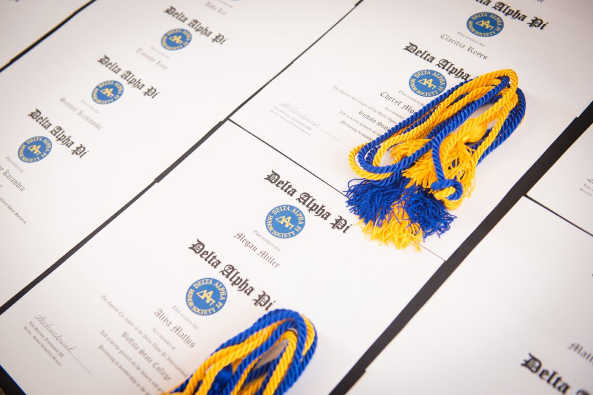

Recognition
Celebrate academic achievement and wear blue and gold honor cords at commencement.
Working for an aDAPtable world
Our history and purpose
Founded in 2004 at East Stroudsburg University of Pennsylvania, DAPi became a national honor society in 2006 and a nonprofit organization in 2008.

Delta Alpha Pi recognizes high-achieving college and university students with disabilities. The society changes negative perceptions of disability by celebrating academic accomplishment and developing leadership, advocacy, and education skills.
Delta represents disability and strength. Alpha represents achievement and advocacy. Pi represents pride and education.
Membership
I pledge to continue my pursuit of academic excellence, demonstrate leadership in advancing the rights of individuals with disabilities, serve as a role model, advocate for myself and others, and participate actively in Delta Alpha Pi Honor Society.
Member benefits
Celebrate academic achievement and wear blue and gold honor cords at commencement.
Build experience through chapter offices, mentoring, programming, and advocacy.
Join a national community of high-achieving students with disabilities.
2025–2026
Alison R. Dodge
Eta Mu Chapter, Hartwick College